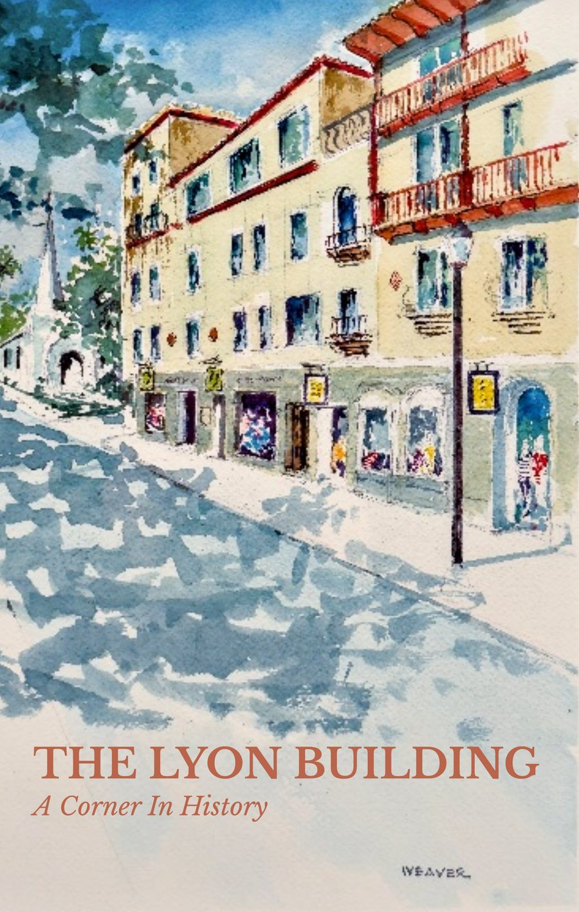

First edition
The Lyon Building
A Corner In History
Built in 1886 at the corner of King and St. George Streets, a block from a plaza laid out in 1573. Franklin W. Smith cast it from Portland cement and crushed coquina shell, poured into wooden forms, at a time when almost everything around it was made of wood. Neighbors called it a jail, a fort, anything but what it was, because what it was did not yet have a name.
In February 1939 a fire started in a dry cleaner on the upper floors and burned for hours. It would have leveled a wooden commercial block in one. When firefighters drilled through the floors to drain the water, they found them packed with crushed shell. The building performed exactly as its builders had promised fifty-two years earlier.
They were right about the corner. They had no idea about the forever.
This is the story of that corner, across six eras: the material that changed Florida's built environment, the bazaars and the palmist on the ground floor, the fire, the thirty thousand tiles a man named Bernhard spent three decades setting and vandals stripped in two, and the afternoon in 1964 when a mob attacked Andrew Young at the intersection outside. The building did not choose to be there. It was simply still there.
- Softcover
- 5 × 8 in
- 60 pages
- Published May 2026
- ISBN 979-8-234-10396-3